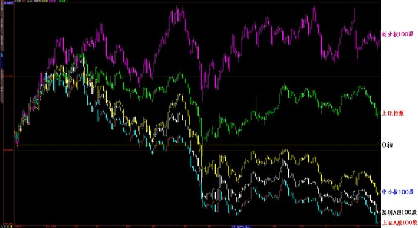
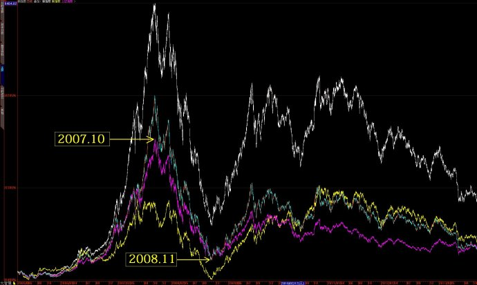
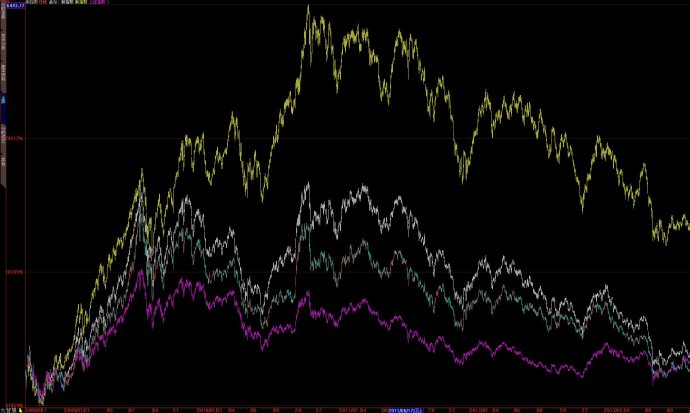

第394篇•2013年市场回顾与未来展望（2）
——牛股上涨与熊股下跌的逻辑
谷为陵
三、牛股上涨的逻辑
我在上文重点研究了一年来涨幅最高100只大牛股（简称“涨幅最高100股”），我大致分析了一下这些牛股的成因，我在进行分析时，既用了归纳法，也用了排除法。在运用排除法方面，我发现“涨幅最高100股”与高每股收益、低市盈率、高销售毛利率这些指标相关性不高。
这是一个很有趣的问题，因为在我们的正统的投资理念中，高每股收益、低市盈率、高销售毛利率这些指标，应该属于筛选绩优股与价值股的基本指标，现在证实了“涨幅最高100股”与这些指标相关性不高，已经说明用这些指标至少在去年是不能够系统性地筛选出大牛股的，那么，这些选股指标是否还有实际存在价值呢？
当然，我们暂时还不能因为用这些指标筛选不出“涨幅最高100股”就完全否定这些指标的价值，因为，还存在一种可能性，那就是虽然这些指标不能够筛选出平均涨幅200%的最牛的股票群体，但它们是否能够筛选出平均涨幅在50%左右、与中小板涨幅相当的强势股群体呢？
但是，测试的结果还是令人失望。我用这些指标分别筛选出来的前100只股票构成的指数，其一年来的涨幅大约只有10%，只于与证指数的涨幅相当，也就是说，至少是这一年来，用高每股收益、低市盈率、高销售毛利率这些指标筛选出来的股票，不管它们属于绩优股也好，价值股也好，均非牛股。这个结论似乎与我们的常识相悖，但这是事实，无可辩驳。
那么，“涨幅最高100股”的成因到底是什么呢？根据我上文的研究，我发现这些牛股与总股本小、流通市值低、主营收入增长率高这些指标相关性很高。很有意思的是，这些指标都能够单独成为牛股的基因！具体来说，总股本最小的前100只股票、流通市值最小的前100只股票、主营收入增长率最高（同时每股收益0.2元以上）前100只股票构成的指数的年度涨幅分别为90%、50%、70%，它们的涨幅不仅远远超过了上证指数8%的年度涨幅，还超过了中小板指数40%的年度涨幅。也就是说，通过最简单的分别应用总股本小、流通市值低、主营收入增长率高这三个指标筛选出来的三种类型的100只股票组合，竟然全部轻松战胜了除了创业板之外的三个市场，且平均年度收益还能够达到50%～90%！我相信，这个业绩足以战胜市场中绝大多数的公募基金与阳光私募基金。
由于这三个指标中的总股本小、流通市值低这两个指标与股票基本面毫无关系，但它们却是牛股的基因，这不能不说是一个很令人惊奇地现象，这个现象该怎样解释呢？
我在上周末的股市沙龙谈到这个问题的时候，引发了现场激烈的争论。有人认为，现在的股市狂炒小盘股、题材股、概念股，而完全忽视绩优股、价值股以及大盘股，这是典型熊市的特征。而另外有些人则认为，股市之所以出现这样的现象，属于市场中的“聪明人拿聪明钱干聪明事”——股市里的钱就这么多，若市场大的资金结构不发生根本改变，市场的热钱为了追逐最高的收益，只好集中火力打小盘股、打题材股、打概念股，抱团取暖才能够赚大钱，那些大盘股不仅难以炒作，且成长性也并不高，连公募基金都不愿意炒，逐渐被市场边缘化了，哪会有行情？所以，这是市场的正常现象，今后也会长期如此。
我认为，他们所言各有道理，我就接着他们的话题继续深入分析一下那些大熊股的下跌逻辑：
四、大熊股下跌的逻辑
从市场层面看，除了创业板尽显牛气外，上证指数与深成指还是熊气弥漫。可以确定的是，在沪深主板这样的弱势市场，肯定会有一批领跌的大熊股，那么，这些股票都是谁呢？它们是处于怎样的下跌情况呢？若了解这些大熊股的情况，就会对沪市主板的弱势有更为直观的认识，为此，我分别将上证A股、深圳A股、中小板、创业板这个四个市场自2012年12月1日至2013年12月31日跌幅前100只股票做成四个独立的指数，其与上证指数的日K线叠加图如下：

我在上图中用黄线做了一条水平线的0轴，左边是2012年12月3日的0轴起点，右边是2014年1月8日的终点。0轴所代表的意义是：在0轴之上代表上涨，在0轴之下代表下跌。可见，在上证A股、深圳A股与中小板中的，其跌幅前100只股票均为下跌状态，且迭创新低。其中，上证A股跌幅前100只股票一年来平均跌幅为30%、深圳A股中的为25%、中小板中的为16%，同期上证指数涨幅为8%，而一年来创业板下跌的股票只有5只，若将创业板中涨幅最小前100只股票做成指数，则其平均涨幅为40%。
显而易见，上证指数、深成指与中小板指数的杀跌动力，就是来自于它们各自的这100只迭创新低的大熊股。那么，这些熊股都是些什么股票呢？它们的历史表现如何呢？我们就把时间周期向前延伸，来看一下它们的历史表现。下面是2005年7月至2014年1月6日上证A股、深圳A股与中小板中的2013年跌幅前100只股票三种指数与上证指数的叠加图：

在上图中，粉线代表上证指数，红绿线代表上证A股2013年跌幅前100只股票指数，白线代表深圳A股2013年跌幅前100只股票指数，黄线代表中小板2013年跌幅前100只股票指数。从图中可以看出，在2007年10月，当上证指数创出6124点历史高点时，除了黄线低于上证指数之外，红绿线高于上证指数，而白线高度几乎超出上证指数一倍，这都意味着深圳A股这100只股票指数当年的涨幅高达10倍！这说明什么？这说明这些上证A股与深圳A股的股票，在2005年7月至2007年10月的大牛市中，均为跑赢大盘的大牛股群体！
那么，这些牛股在2008年11月至2013年底的走势是怎样的呢？为了同步比较，我又将以上指数的时间周期设定在了2008年11月至2013年底，其叠加图如下：

在上图中，每一种颜色线所代表的指数与前一张图相同，即粉线代表上证指数，等等。从上图中可以看出，自2008年11月直至2013年5月，其它三种指数的涨幅都超过了上证指数的涨幅，其中，黄线所代表的中小板100只股票指数涨幅最大，上证A股与深圳A股的100只股票指数分别在2009年与2010年出现一波上涨行情，涨幅远远超过沪指涨幅，这说明这些股票都是2009年至2010年的大牛股群体。但是，自2013年5月之后，上证A股与深圳A股的100只股票指数出现了暴跌，最终竟然与上证指数走势重合，这说明去年下半年以来，这些股票跌幅是远远高于沪指的，是市场的主要杀跌动力。
通过对以上的三张图的深入分析，我们应该清楚了这样的事实：2013年的上证A股、深圳A股与中小板中跌幅前100只股票，这300只大熊股是去年三个市场的主要杀跌动力，但是，这300只大熊股在历史上却是市场中最牛的群体，自2005年7月至2013年5月的8年时间里，它们都是跑赢了上证指数的大牛股群体。历史上的300只大牛股悄然变为了300只大熊股，这确实有点匪夷所思，也是非常残酷的。那么，这些股票都是谁呢？我列出了去年跌幅前20只股票，大家看看都认识不？
洋河股份-58%
山东黄金-53%
酒鬼酒-51%
*ST超日-50%
山西汾酒-46%
平庄能源-46%
兖州煤业-44%
盘江股份-43%
中金黄金-42%
水井坊-42%
阳泉煤业-41%
五粮液-40%
山煤国际-40%
辰州矿业-39%
贵州茅台-39%
铜陵有色-38%
中南建设-39%
豫光金铅-39%
锡业股份-38%
金种子酒-38%
看清楚这些大熊股了吧？全部是白酒股、有色金属股与煤炭股！我们应该记得，在2005年5月至2007年10月，有色金属股平均涨幅10倍以上，是何等风光？在2009年，煤炭股平均暴涨4倍又亮瞎了多少人的眼？到了2010年，黄金股又是迭创历史新高，所有黄金股都成为了股市的高价贵族股；而在2012年股市低迷之际，白酒股却异军突起，洋河股份与贵州茅台引领白酒股攻城略地，连克100元与200元大关，成为了股市的一道靓丽的风景线！
为什么它们在去年会摔得这样惨？其实它们的市盈率并不高呀？为什么去年跌幅最大的股票不是那些垃圾股，不是那些ST股呢？这里面肯定有深刻的、隐秘的市场规律在其作用，那么，这个市场规律是什么呢？
我认为，答案也许不止一个，但是，“均值回归效应”应该是其中一个非常主要的原因！当然，从本源上看，均值回归是一个市场现象，其背后还有基本的推动力，那就是市场的摇摆定律——价格涨高了就倾向于下跌，价格跌低了就倾向于上涨，这是市场的自然规律。
以上的20只大熊股，以及那300只大熊股，它们去年之所以大跌，其中的主要原因是，它们在前8年的涨幅太大了，或者说以前曾经涨得太多了，现在在经历痛苦的价格上的均值回归。
应该说，有色金属股、煤炭股的下跌，还有一个原因，那就是随着中国经济的转型，强周期性行业风光的时代已经彻底结束了，市场已经发生了根本性的变化，这就是去年市场狂炒小盘股、题材股、概念股，而摒弃大盘股、强周期股的另一个原因。
当然，以均值回归的不变真理来看，去年以及今后爆炒与暴涨的那些小盘股、题材股、概念股等等，在明年或者今后若干年，定会与它们之前的白酒股、有色金属股与煤炭股等老大哥们，以及与更早的12年前的网络股前辈一样，再次经历痛苦的均值回归，这是市场的规律，不以人们的意志为转移。
均值回归的普遍存在，就使得10年以上的长期价值投资，在大概率上是难以操作的，也是难以长期成功的，这就是我为什么推崇大波段操作的原因所在，因为市场一直在给我持续不断的证据方面的支持。
（未完待续）